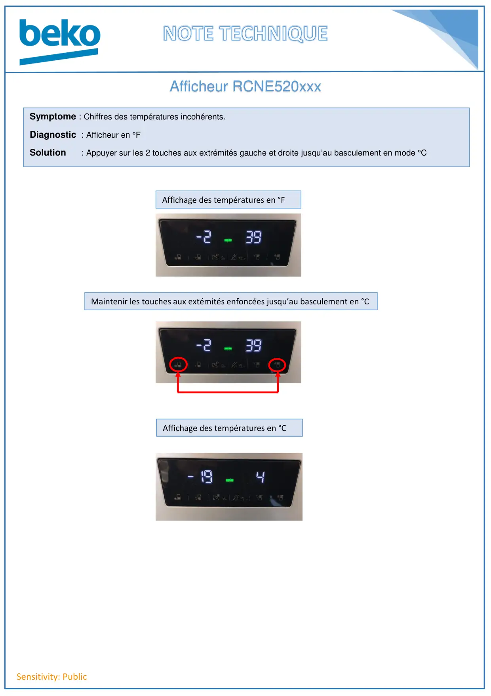

Sensitivity: PublicAfficheur RCNE520xxxSymptome : Chiffres des températures incohérents.Diagnostic : Afficheur en °FSolution : Appuyer sur les 2 touches aux extrémités gauche et droite jusqu’au basculement en mode °CAffichage des températures en °FMaintenir les touches aux extémités enfoncées jusqu’au basculement en °CAffichage des températures en °C
1 / 1